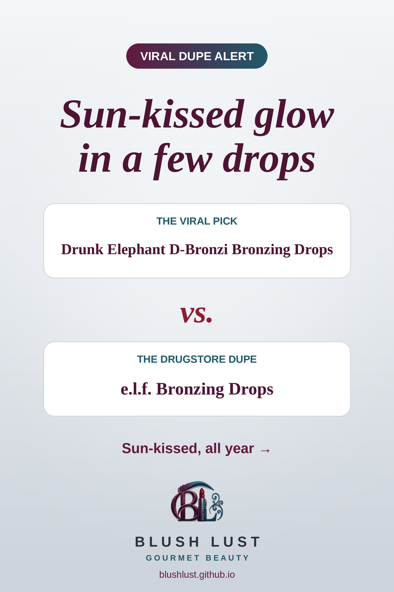

The bronzing drops, for less
Mix a few drops into moisturizer or foundation for a warm, sun-kissed glow, all year round.
This post contains affiliate links. If you buy through them, we may earn a small commission at no extra cost to you. As an Amazon Associate I earn from qualifying purchases.
e.l.f. Bronzing Drops
The viral pickDrunk Elephant D-Bronzi Bronzing Drops
vs.
The dupee.l.f. Bronzing Drops

See today’s price on Amazon.ca →
Comparisons reflect what beauty shoppers commonly say, not lab testing. Shades and formulas vary — check reviews before you buy.
More glow dupes
Featured in: The Glow Edit: 8 Drugstore Dupes for Lit-From-Within Skin →